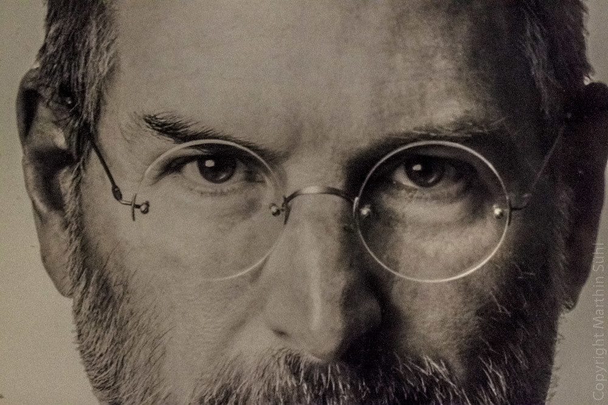

Steve Jobs
A man who thought different.

Steve Jobs. The man behind Apple. Photo by Marthin Suhl
A time line of Steve Job's life:
- 1955 - Steve is born and adopted into the Jobs family.
- 1968 - Steve gets his first job at Hewlett-Packard.
- 1971 - Jobs and Steve Wozniak become friends.
- 1973 - Jobs sells Wozniak's game and gets hired as a technician by Atari who thought that he created the game.
- 1974 - Steve travels to India for 7 months to look for inspirations.
- 1976 - Jobs, Wozniak and Wayne start Apple Computer company to sell Apple I computer created by Wozniak.
- 1977 - Apple II is released and sold as a first consumer product sold by Apple Computer.
- 1980 - Jobs becams a milionaire.
- 1985 - Jobs resignes from Apple and starts new company call NeXT that specializes in making computers for colleges.
- 1986 - Jobs buys LucasFilms Graphic Design company and names it Pixar.
- 1995 - Toy Story is released by Pixar.
- 1996 - Jobs becomes bilionaire.
- 1997 - Apple buys NexT for $427 milion and Jobs becomes CEO of Apple Inc.
- 1998 - iMac is being released.
- 2001 - iPod is being released and Apple becomes a major player in the music industry.
- 2003 - Jobs is diagnosed with cancer.
- 2007 - First iPhone is introduced to the market.
- 2007 - Steve Jobs is named the most powerful person in business by Fortune magazine.
- 2011 - Steve Jobs dies as a legend on October 5th 2011.
“Your work is going to fill a large part of your life, and the only way to be truly satisfied is to do what you believe is great work. And the only way to do great work is to love what you do. If you haven’t found it yet, keep looking. Don’t settle. As with all matters of the heart, you’ll know when you find it.”